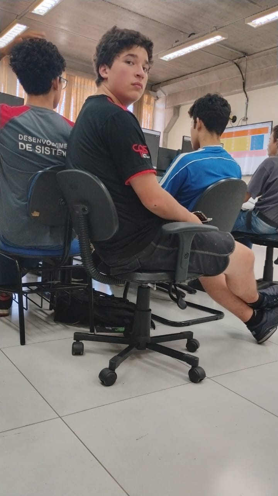

Giovanni Galafrio Ferrari tem 15 anos e é um jovem especialmente carismatico ele é bom em diversos esportes como:basquete futebol etc, e costuma dormir em todas as aulas, de alguma forma mesmo dormindo consegue aprender e pode ser considerado "inteligente". sua cor favorita é azul